layout: true .toc.banner[ .sevinlogo[ ] .dontprint[ <img class="gif nothovered" src="assets/alltogether.gif"/> ] .shorttitle[ ] ] --- name: home class: metadata customtitle middle left giphy .toc.sidebar.left-column[ .outline[ # [<span class="bilingvo" data-hover="Чипирование"><span class="show">Биотелеметрия</span></span>](#intro) # [Данные](#data) # [Результаты](#results) # [.pass[Обсуждение] ](#He8f34) # [Выводы ](#He0ed6) ] ] .toc.mainbar.right-column.scrollable[ .authors[ .author[.speaker[Платонов Н. Г.], Мордвинцев И. Н., Иванов Е. А., Артемьева С. М., Найденко С. В.] .institute[ИПЭЭ РАН] ] .title[ Анализ биотелеметрии белых медведей Карского моря ] .subtitle[ ] .what[ IX научно-практическая конференция «Вселенная белого медведя» ] .where[ ] .when[ 28 февраля 2026 г. .updated[Обновлено: 2026-02-24 15:13] ] .footer[ Nikita Platonov<br>.font90[*A. N. Severtsov Institute of Ecology and Evolution of the Russian Academy of Sciences*]<br>**Satellite biotelemetry of polar bears in the Kara Sea**<br> ] ] --- name: intro .toc.sidebar.left-column[ .outline[ # [<span class="bilingvo" data-hover="Чипирование"><span class="show">Биотелеметрия</span></span>](#intro).fg[].bg[] # [Данные](#data).bg[] # [Результаты](#results).bg[] # [.pass[Обсуждение] ](#He8f34).bg[] # [Выводы ](#He0ed6).bg[] ] ] .toc.mainbar.right-column.scrollable[ .header.h1.broad[ <span class="generation"><span class="bilingvo" data-hover="Чипирование"><span class="show">Биотелеметрия</span></span></span> ] .fixprecode[ Дистанционное отслеживание местонахождения животных .pulling.adjust-width[ .pull-left-60[ + Закономерности распределения и поведения белых медведей + Осваиваемые пространства и площади участков обитания + Абиотические параметры предпочитаемых местообитания + Влияние абиотических факторов на поведение + Определение мест залегания в родовые берлоги + Данные для моделирования ареалов ] .pull-right-40[ <img src="https://data.seaice.uni-bremen.de/amsr2/today/extent_n_running_mean_amsr2_previous.png" alt="" width="1330" height="700" zuntouchable hovered style="display: block; margin: auto auto auto 0;" /> <img src="https://nsidc.org/data/seaice_index/images/daily_images/N_iqr_timeseries.png" alt="" width="1330" height="700" zuntouchable hovered style="display: block; margin: auto auto auto 0;" /> ] ] .footer.english[ Remote tracking of animal locations is applied for estimating distribution patterns and behavior of polar bears, space use and home range sizes, abiotic parameters of preferred habitats, understanding influence of abiotic factors on behavior, for applying species distribution modeling, and in some cases for identifying denning sites ] ] ] --- name: data .toc.sidebar.left-column[ .outline[ # [<span class="bilingvo" data-hover="Чипирование"><span class="show">Биотелеметрия</span></span>](#intro).bg[] # [Данные](#data).fg[].bg[] ## [Передатчики](#collars) ## [.pass[Отловы] ](#field2024) ## [Локации](#traj) # [Результаты](#results) # [.pass[Обсуждение] ](#He8f34) # [Выводы ](#He0ed6) ] ] .toc.mainbar.right-column.scrollable[ .header.h1.broad[ <span class="generation">Данные</span> ] .fixprecode[ .pulling.adjust-width[ .pull-left-75[ ## Отловы Обездвиживание с вертолёта: + 2024 г., безлёдный период, август-сентябрь. + 2025 г., ледовый период, апрель-май. ## Глубины и высоты Глобальная модель рельефа <span class="cite hovertext" data-hover="The GEBCO_2025 Grid - a continuous terrain model for oceans and land at 15 arc-second intervals"><a name=cite-GEBCO_2025></a>([GEBCO Bathymetric Compilation Group, 2025](#bib))</span>. ## Береговая линия Упрощенные полигоны суши <span class="cite hovertext" data-hover="Data Derived from OpenStreetMap for Download"><a name=cite-OpenStreetMapData></a>([Topf and Hormann, 2025](#bib))</span>. + Расстояние до берега ## Морской лёд Ледовые карты типов льдов умеренной сплоченности (CT18) и сплочённого льда (CT81) <span class="cite hovertext" data-hover="Daily Arctic Marginal Ice Zone (MIZ) and Overlay Shapefile"><a name=cite-USNIC_MIZ></a>([US NIC, 2022](#bib))</span>. ] .pull-right-25[ <p>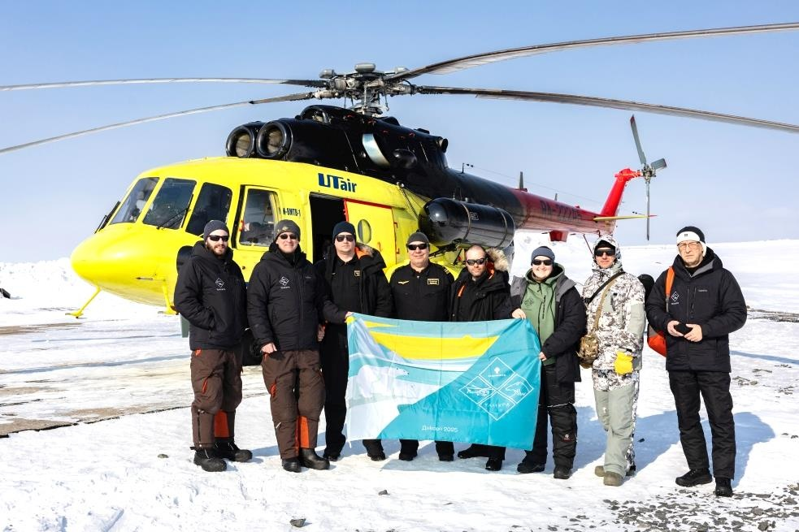</p> <p>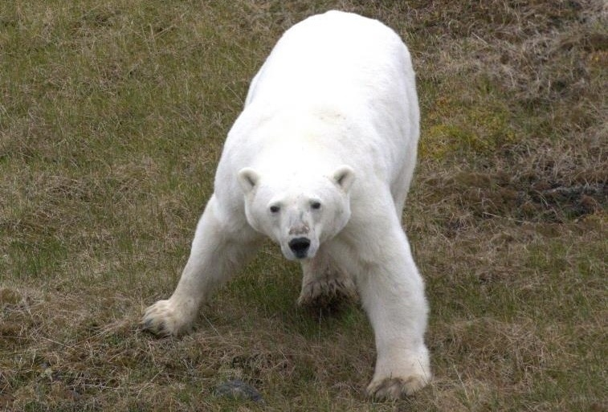</p> <p>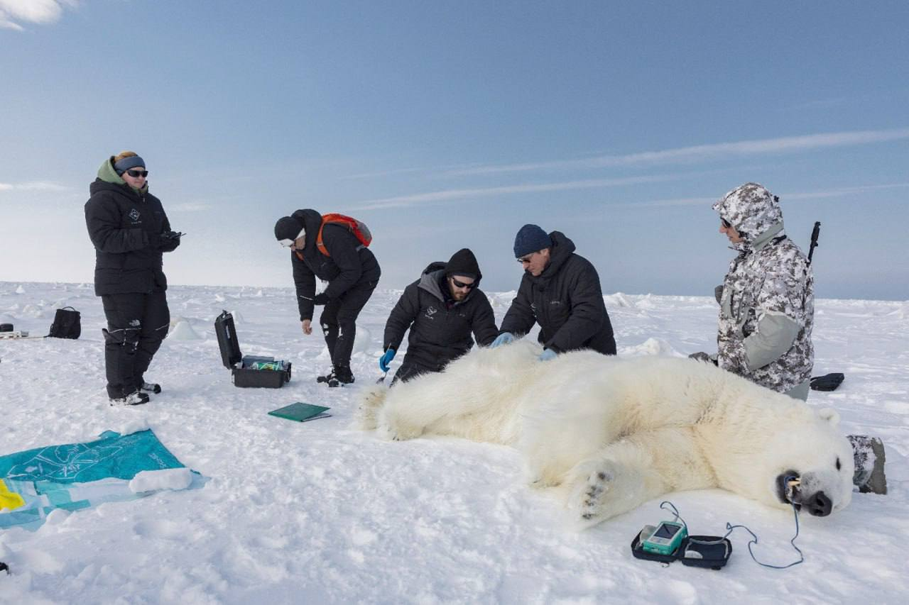</p> ] ] .footer[ **Data** for biotelemetry were acquired after polar bears captures during ice-free season in autumn 2024 and during fast-ice season in spring 2025. Distance to coastline and depths and altitudes were used abiotic parameters as well as ice charts of marginal ice zones and pack ice. ] ] ] --- name: collars .toc.sidebar.left-column[ .outline[ # [<span class="bilingvo" data-hover="Чипирование"><span class="show">Биотелеметрия</span></span>](#intro) # [Данные](#data).fg[] ## [Передатчики](#collars).fg[].bg[] ## [.pass[Отловы] ](#field2024).bg[] ## [Локации](#traj).bg[] # [Результаты](#results) # [.pass[Обсуждение] ](#He8f34) # [Выводы ](#He0ed6) ] ] .toc.mainbar.right-column.scrollable[ .header.h2.broad[ <span class="generation">Передатчики</span> .parent[.grand[Данные]] ] .fixprecode[ .row[ <div class="figure" style="text-align: left"> <img src="assets/Polar Bear Collar.jpg" alt="[alt text is omitted]" width="1330" height="700" /> <p class="caption">Спутниковый ошейник</p> </div> <div class="figure" style="text-align: left"> <img src="assets/Ушная метка №1.jpg" alt="[alt text is omitted]" width="1330" height="700" /> <p class="caption">Ушная метка 2024 г.</p> </div> <div class="figure" style="text-align: left"> <img src="assets/Ушная метка №2.jpg" alt="[alt text is omitted]" width="1330" height="700" /> <p class="caption">Ушная метка 2025 г.</p> </div> ] .footer[ Satellite collars are used for females. Ear-mounted telemetry tags are generally for males. Within half of a year, it succeeded in reducing the devices size and weight by one-third. ] ] ] --- name: field2024 .toc.sidebar.left-column[ .outline[ # [<span class="bilingvo" data-hover="Чипирование"><span class="show">Биотелеметрия</span></span>](#intro) # [Данные](#data).fg[] ## [Передатчики](#collars) ## [.pass[Отловы] ](#field2024).fg[] ### [2024 г.](#field2024).fg[].bg[] ### [2025 г.](#field2025).bg[] ## [Локации](#traj) # [Результаты](#results) # [.pass[Обсуждение] ](#He8f34) # [Выводы ](#He0ed6) ] ] .toc.mainbar.right-column.scrollable[ .header.h3.broad[ <span class='outline generation'>Отловы 2024 г.</span> .parent[.grand[.pass[Отловы] .grand[Данные]]] ] .fixprecode[ <p>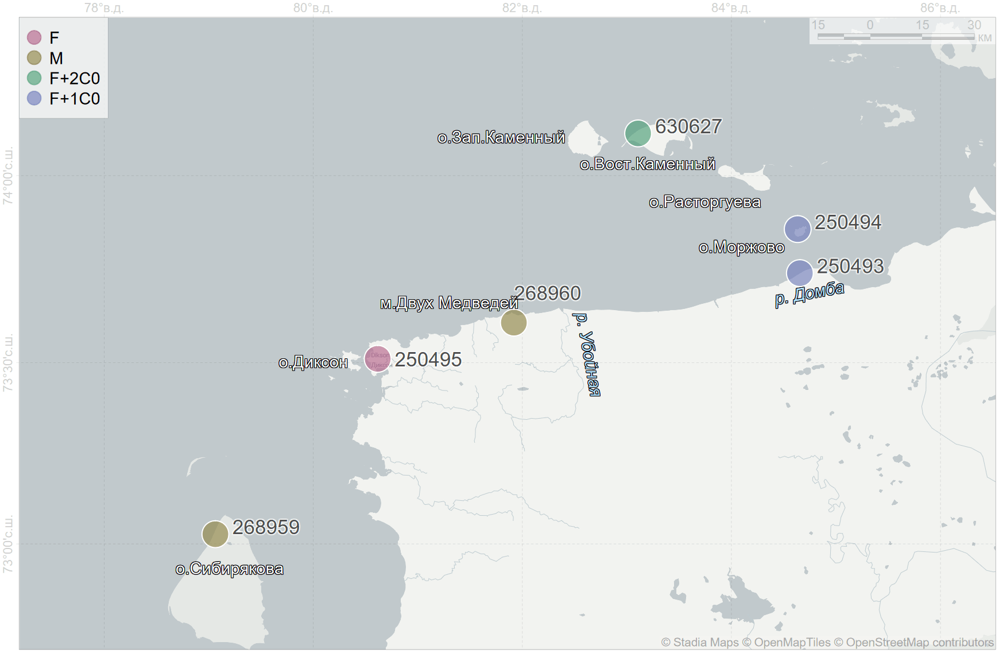</p> ] ] ??? The spatial distribution of the tagged polar bears during August and September 2024 was associated with the coastline of the Taimyr Peninsula and adjacent islands. --- name: field2025 .toc.sidebar.left-column[ .outline[ # [<span class="bilingvo" data-hover="Чипирование"><span class="show">Биотелеметрия</span></span>](#intro) # [Данные](#data).fg[] ## [Передатчики](#collars) ## [.pass[Отловы] ](#field2024).fg[] ### [2024 г.](#field2024).bg[] ### [2025 г.](#field2025) <span class="bullet bullet-active">[•](#field2025)</span><span class="bullet mslide12m">[•](#field2025s1)</span><span class="bullet mslide14m">[•](#field2025m)</span>.fg[].bg[] ## [Локации](#traj) # [Результаты](#results) # [.pass[Обсуждение] ](#He8f34) # [Выводы ](#He0ed6) ] ] .toc.mainbar.right-column.scrollable[ .header.h3.broad[ <span class='outline generation'>Отловы 2025 г.</span> .parent[.grand[.pass[Отловы] .grand[Данные]]] ] .fixprecode[ <p>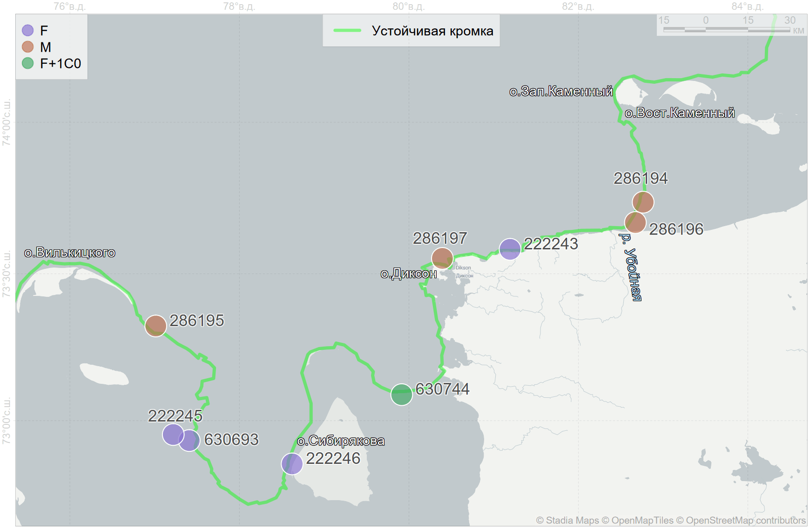</p> ] ] ??? In April and May 2025 during field work in the same region all polar bear tagging locations were at the fast-ice edge. --- name: field2025s1 .toc.sidebar.left-column[ .outline[ # [<span class="bilingvo" data-hover="Чипирование"><span class="show">Биотелеметрия</span></span>](#intro) # [Данные](#data).fg[] ## [Передатчики](#collars) ## [.pass[Отловы] ](#field2024).fg[] ### [2024 г.](#field2024).bg[] ### [2025 г.](#field2025) <span class="bullet bullet">[•](#field2025)</span><span class="bullet bullet-active">[•](#field2025s1)</span><span class="bullet mslide14m">[•](#field2025m)</span>.fg[].bg[] ## [Локации](#traj) # [Результаты](#results) # [.pass[Обсуждение] ](#He8f34) # [Выводы ](#He0ed6) ] ] .toc.mainbar.right-column.scrollable[ .header.h3.broad[ <span class='outline generation'>Отловы 2025 г.</span> .parent[.grand[.pass[Отловы] .grand[Данные]]] ] .fixprecode[ <p>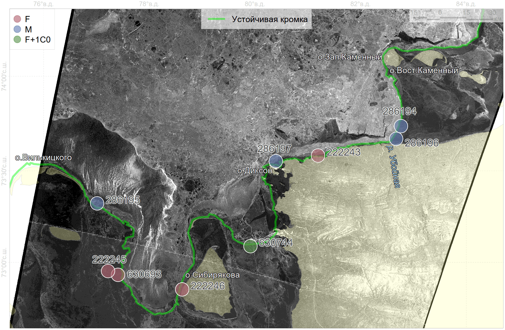</p> ] ] ??? A series of radar satellite images were used to identify the edge of the fast ice for route planning for polar bear searches. Based on observations of animal trails, the pack ice in this region during the spring season was rarely used by polar bears. This ice type was fragile and not reliable for ground work. --- name: field2025m .toc.sidebar.left-column[ .outline[ # [<span class="bilingvo" data-hover="Чипирование"><span class="show">Биотелеметрия</span></span>](#intro) # [Данные](#data).fg[] ## [Передатчики](#collars) ## [.pass[Отловы] ](#field2024).fg[] ### [2024 г.](#field2024).bg[] ### [2025 г.](#field2025) <span class="bullet bullet">[•](#field2025)</span><span class="bullet bullet">[•](#field2025s1)</span><span class="bullet bullet-active">[•](#field2025m)</span>.fg[].bg[] ## [Локации](#traj) # [Результаты](#results) # [.pass[Обсуждение] ](#He8f34) # [Выводы ](#He0ed6) ] ] .toc.mainbar.right-column.scrollable[ .header.h3.broad[ <span class='outline generation'>Отловы 2025 г.</span> .parent[.grand[.pass[Отловы] .grand[Данные]]] ] .fixprecode[ <p>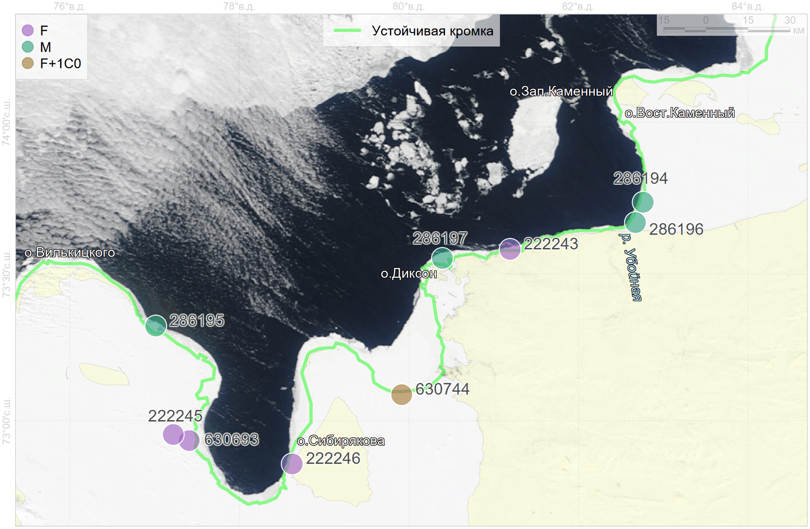</p> ] ] ??? Optical satellite imagery like MODIS supplements microwave imagery but is unsufficient for fast-ice detection --- name: traj .toc.sidebar.left-column[ .outline[ # [<span class="bilingvo" data-hover="Чипирование"><span class="show">Биотелеметрия</span></span>](#intro) # [Данные](#data).fg[] ## [Передатчики](#collars).bg[] ## [.pass[Отловы] ](#field2024).bg[] ## [Локации](#traj).fg[].bg[] # [Результаты](#results) # [.pass[Обсуждение] ](#He8f34) # [Выводы ](#He0ed6) ] ] .toc.mainbar.right-column.scrollable[ .header.h2.broad[ <span class="generation">Локации</span> .parent[.grand[Данные]] ] .fixprecode[ .pulling[ .pull-left-70[ #### Построение траектории + Фильтрация локаций по порогу скорости смещения <span class="cite hovertext" data-hover="A simple new algorithm to filter marine mammal Argos locations"><a name=cite-Argos-filter></a>([Freitas et al., 2008](#bib))</span>. + Исключение локаций вручную и повторение фильтрации + На 24 февраля 2026 г. для одной особи одна локация в море Лаптевых + Модель простого случайного блуждания <span class="cite hovertext" data-hover="Movement responses to environment: fast inference of variation among southern elephant seals with a mixed effects model"><a name=cite-Jonsen2019></a>([Jonsen et al., 2019](#bib))</span>, <span class="cite hovertext" data-hover="A continuous-time state-space model for rapid quality-control of Argos locations from animal-borne tags"><a name=cite-Jonsen2020></a>([Jonsen et al., 2020](#bib))</span> для построения ежесуточных локаций на 12:00 <abbr title="единое скоординированное время, единое время">UTC</abbr> #### Оценка длины шага суточного смещения + Фильтрация локаций по площади эллипса ошибки, прямолинейности перемещения и величине смещения. ] .pull-right-30[ <p>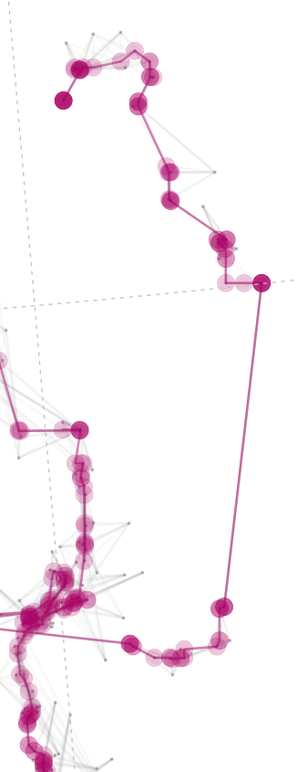</p> ] ] .footer[ Data processing includes applying of Argos filter to locations and interactive removing undesirable locations. Random walk modelling was used to estimate daily locations at noon UTC. Locations with high value of errors and over-straightforwardness were removed before 'daily displacement' parameter was estimated. ] ] ] --- name: results .toc.sidebar.left-column[ .outline[ # [<span class="bilingvo" data-hover="Чипирование"><span class="show">Биотелеметрия</span></span>](#intro).bg[] # [Данные](#data).bg[] # [Результаты](#results).fg[].bg[] ## [Суточный ход ](#H8687d) ## [.pass[Морской лёд] ](#H673fe) # [.pass[Обсуждение] ](#He8f34) # [Выводы ](#He0ed6) ] ] .toc.mainbar.right-column.scrollable[ .header.h1.broad[ <span class="generation">Результаты</span> ] .fixprecode[ .dontprint[ <img src="assets/alltogether.gif" alt="" width="1330" height="650" center style="display: block; margin: auto auto auto 0;" /> ] .font70.tableimg[ <table> <tbody> <tr> <td> <p>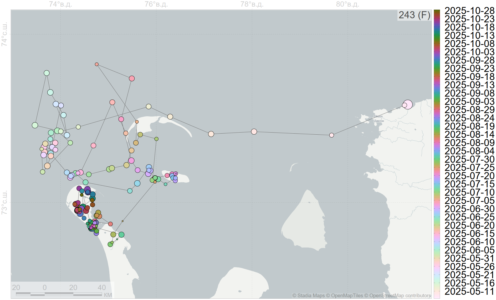</p> <span class="inset map222243">243🙎</span> </td> <td> <p>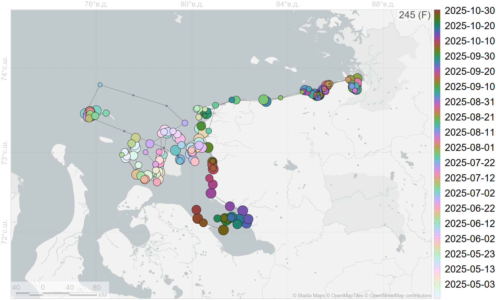</p> <span class="inset map222245">245🙎</span> </td> <td> <p>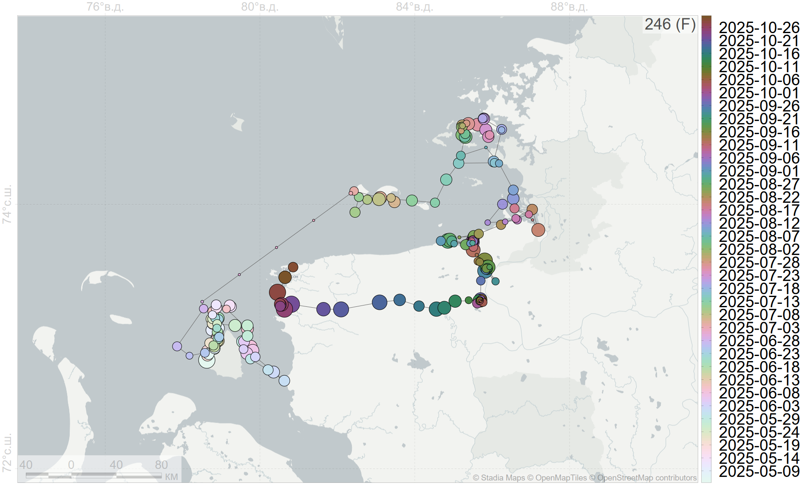</p> <span class="inset map222246">246🙎</span> </td> <td> <p>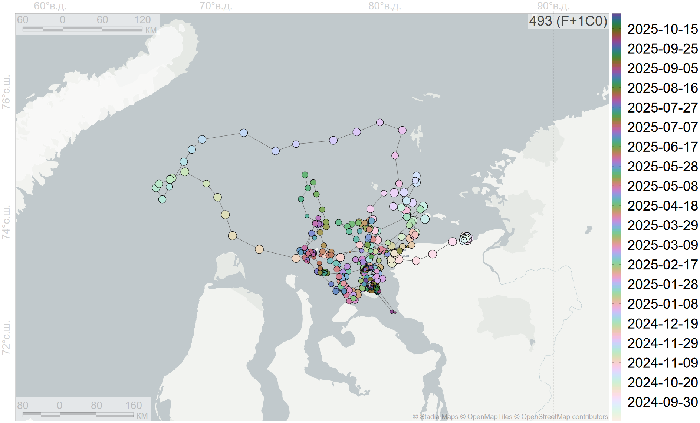</p> <span class="inset map250493">493👩👦</span> </td> </tr> <tr> <td> <p>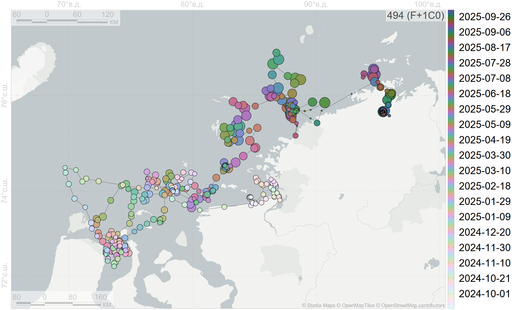</p> <span class="inset map250494">494👩👦</span> </td> <td> <p>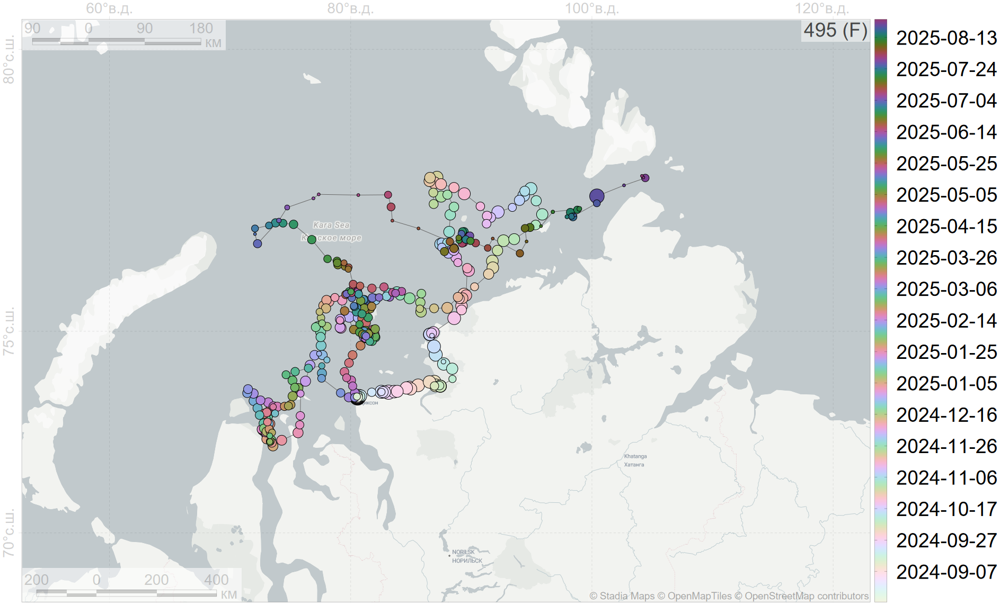</p> <span class="inset map250495">495🙎</span> </td> <td> <p>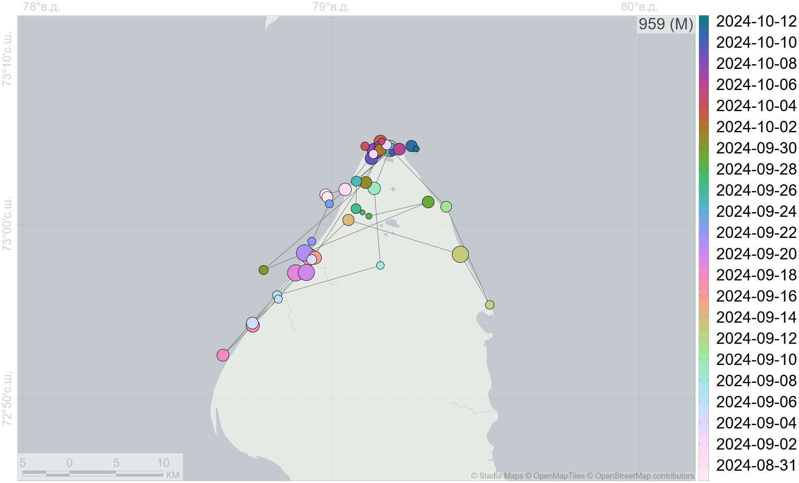</p> <span class="inset map268959">959🙍♂️</span> </td> <td> <p>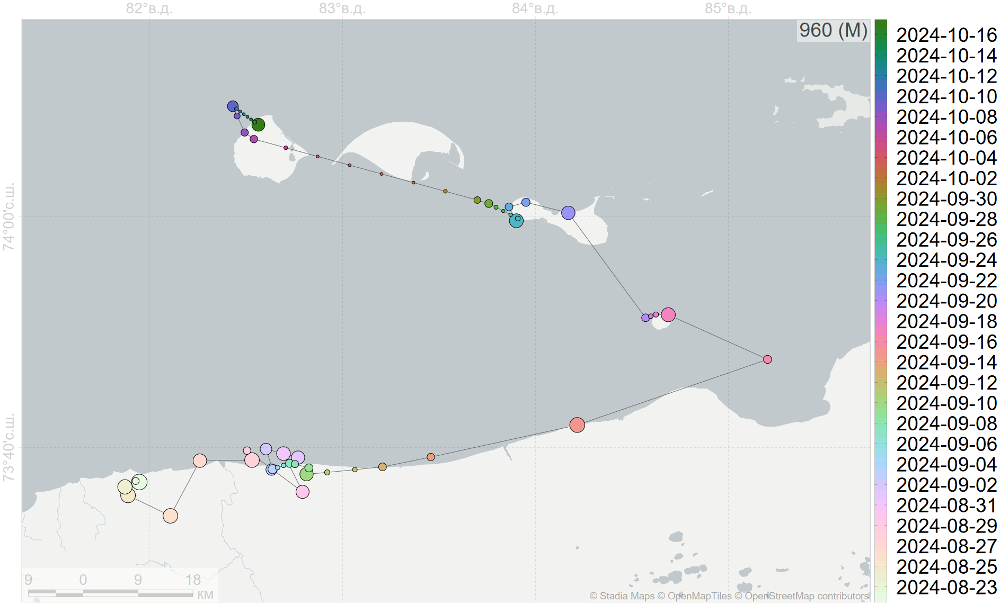</p> <span class="inset map268960">960🙍♂️</span> </td> </tr> <tr> <td> <p>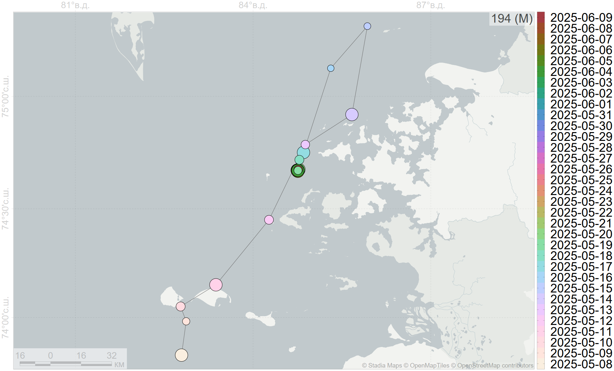</p> <span class="inset map286194">194🙍♂️</span> </td> <td> <p>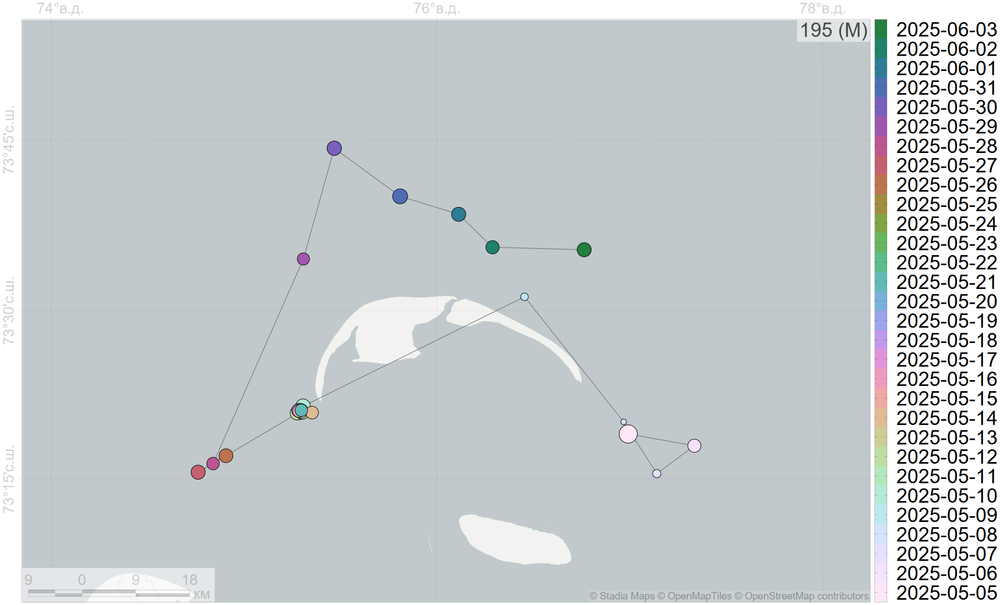</p> <span class="inset map286195">195🙍♂️</span> </td> <td> <p>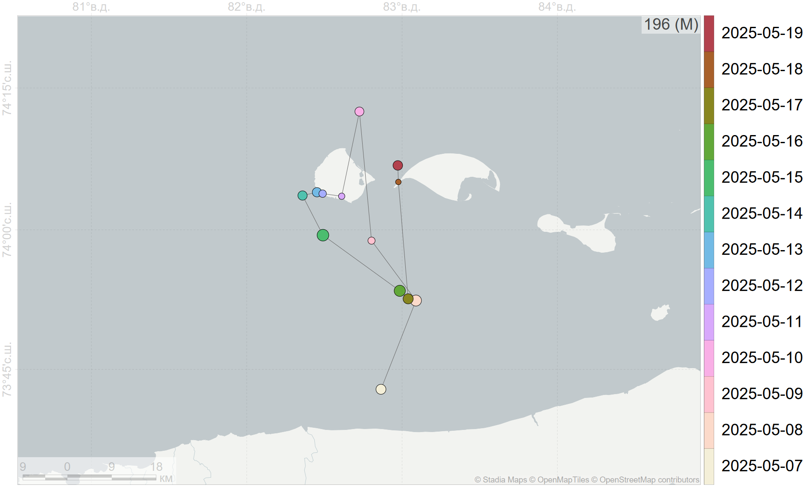</p> <span class="inset map286196">196🙍♂️</span> </td> <td> <p>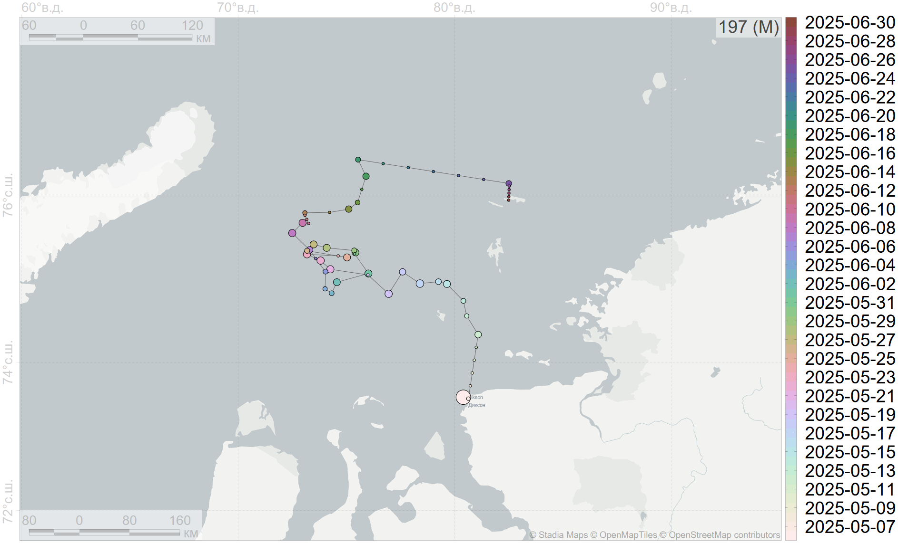</p> <span class="inset map286197">197🙍♂️</span> </td> </tr> <tr> <td> <p>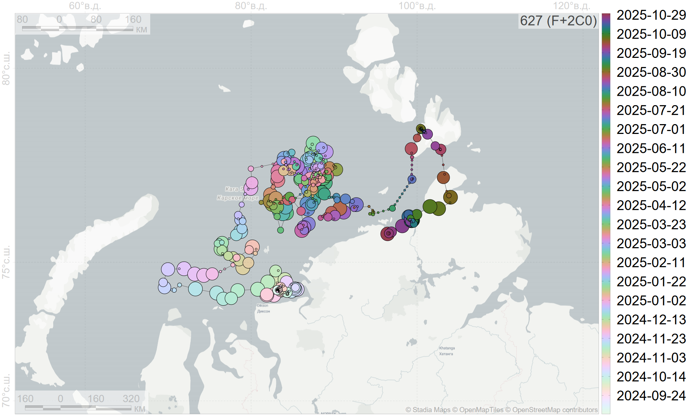</p> <span class="inset map630627">627👩👧👦</span> </td> <td> <p>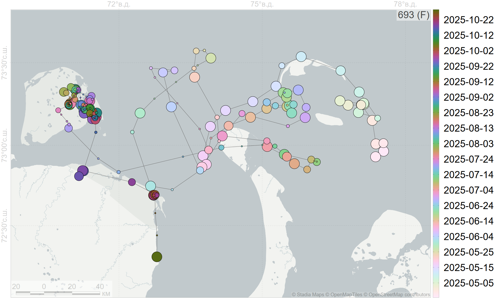</p> <span class="inset map630693">693🙎</span> </td> <td> <p>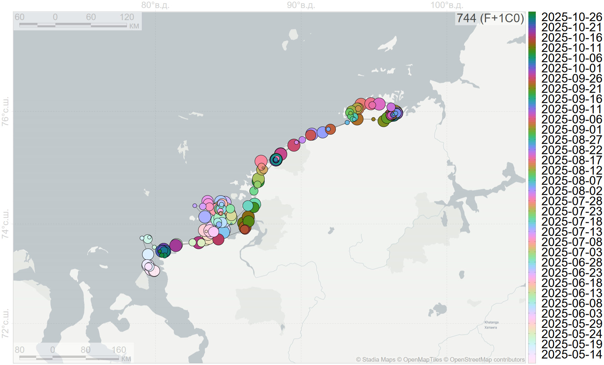</p> <span class="inset map630744">744👩👦</span> </td> <td> </td> </tr> </tbody> </table> ] ] ] ??? Polar bear locations for the more than one and half year polar bear tracking over distribution of the sea ice concentration based on passive microwave data. All marked polar bears prefer south and south-eastern part of the Kara Sea. --- name: H8687d .toc.sidebar.left-column[ .outline[ # [<span class="bilingvo" data-hover="Чипирование"><span class="show">Биотелеметрия</span></span>](#intro) # [Данные](#data) # [Результаты](#results).fg[] ## [Суточный ход ](#H8687d) <span class="bullet bullet-active">[•](#H8687d)</span><span class="bullet mslide21m">[•](#H95a91)</span>.fg[].bg[] ### [До берега](#Hed941) ### [Глубины и высоты ](#H83b3d) ## [.pass[Морской лёд] ](#H673fe) # [.pass[Обсуждение] ](#He8f34) # [Выводы ](#He0ed6) ] ] .toc.mainbar.right-column.scrollable[ .header.h2.broad[ <span class="generation">Суточный ход</span> .parent[.grand[Результаты]] ] .fixprecode[ <div class="figure" style="text-align: left"> <p>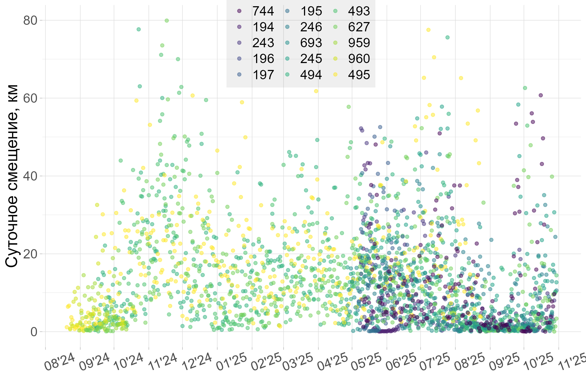</p> <p class="caption">Суточное смещение в безлёдный период меньше</p> </div> .footer[ Daily displacement is less during ice-free period ] ] ] ??? .gray[ While some tagged biotelemetry transmitters are still in service, we have so far conducted only a preliminary analysis. ] One metric, extracted from biotelemetry analysis, is the distance between two locations over a twenty-four-hour period, or daily displacement. .grey[ It was low until mid-October 2024, with values close to zero. Then, polar bear mobility increased, with non-zero values prevailing until December 2024. The next active period was between February and April. In May, the number of data points increased as a result of new tagging. A decrease in mobility is observed in August and September 2025, and is associated with the ice-free period. ] --- name: H95a91 .toc.sidebar.left-column[ .outline[ # [<span class="bilingvo" data-hover="Чипирование"><span class="show">Биотелеметрия</span></span>](#intro) # [Данные](#data) # [Результаты](#results).fg[] ## [Суточный ход ](#H8687d) <span class="bullet bullet">[•](#H8687d)</span><span class="bullet bullet-active">[•](#H95a91)</span>.fg[].bg[] ### [До берега](#Hed941) ### [Глубины и высоты ](#H83b3d) ## [.pass[Морской лёд] ](#H673fe) # [.pass[Обсуждение] ](#He8f34) # [Выводы ](#He0ed6) ] ] .toc.mainbar.right-column.scrollable[ .header.h2.broad[ <span class="generation">Суточный ход</span> .parent[.grand[Результаты]] ] .fixprecode[ <p class="caption centered">t-Критерий Уэлча суточного смещения</p> | |<span class="inset map250493">493👩👦</span> |<span class="inset map250494">494👩👦</span> |<span class="inset map250495">495🙎</span> |<span class="inset map630627">627👩👧👦</span> | |:----------------------------------------------|:---------------------------------------------------|:---------------------------------------------------|:---------------------------------------------------|:---------------------------------------------------| |<span class="inset map250493">493👩👦</span> |**13.8** км/сут.<br>09/12-11/08<br>421/423 сут. |09/13-10/04<br>379 сут.</br>14.9⚔15.2<br>p=0.78 |09/12-08/24<br>345 сут.</br>15.8⚔18.7<br>p**=0.01** |09/17-11/08<br>347 сут.</br>15.1⚔16.0<br>p=0.37 | |<span class="inset map250494">494👩👦</span> |09/13-10/04<br>379 сут.</br>15.2⚔14.9<br>p=0.78 |**15.2** км/сут.<br>09/13-10/04<br>381/387 сут. |09/13-08/24<br>346 сут.</br>16.5⚔18.7<br>p**=0.03** |09/17-10/04<br>310 сут.</br>16.3⚔15.8<br>p=0.65 | |<span class="inset map250495">495🙎</span> |09/12-08/24<br>345 сут.</br>18.7⚔15.8<br>p**=0.01** |09/13-08/24<br>346 сут.</br>18.7⚔16.5<br>p**=0.03** |**17.6** км/сут.<br>08/20-08/24<br>370/370 сут. |09/06-08/23<br>294 сут.</br>18.1⚔16.0<br>p**=0.05** | |<span class="inset map630627">627👩👧👦</span> |09/17-11/08<br>347 сут.</br>16.0⚔15.1<br>p=0.37 |09/17-10/04<br>310 сут.</br>15.8⚔16.3<br>p=0.65 |09/06-08/23<br>294 сут.</br>16.0⚔18.1<br>p**=0.05** |**15.7** км/сут.<br>09/06-11/08<br>355/429 сут. | .footer[ Paired comparison for daily displacement during one year and more illustrates higher mobility for alone polar bear female in comparison with females with cubs. ] ] ] --- name: Hed941 .toc.sidebar.left-column[ .outline[ # [<span class="bilingvo" data-hover="Чипирование"><span class="show">Биотелеметрия</span></span>](#intro) # [Данные](#data) # [Результаты](#results).fg[] ## [Суточный ход ](#H8687d).fg[] ### [До берега](#Hed941).fg[].bg[] ### [Глубины и высоты ](#H83b3d).bg[] ## [.pass[Морской лёд] ](#H673fe) # [.pass[Обсуждение] ](#He8f34) # [Выводы ](#He0ed6) ] ] .toc.mainbar.right-column.scrollable[ .header.h3.broad[ <span class='outline generation'>Расстояние до берега</span> .parent[.grand[Суточный ход .grand[Результаты]]] ] .fixprecode[ <div class="figure" style="text-align: left"> <p>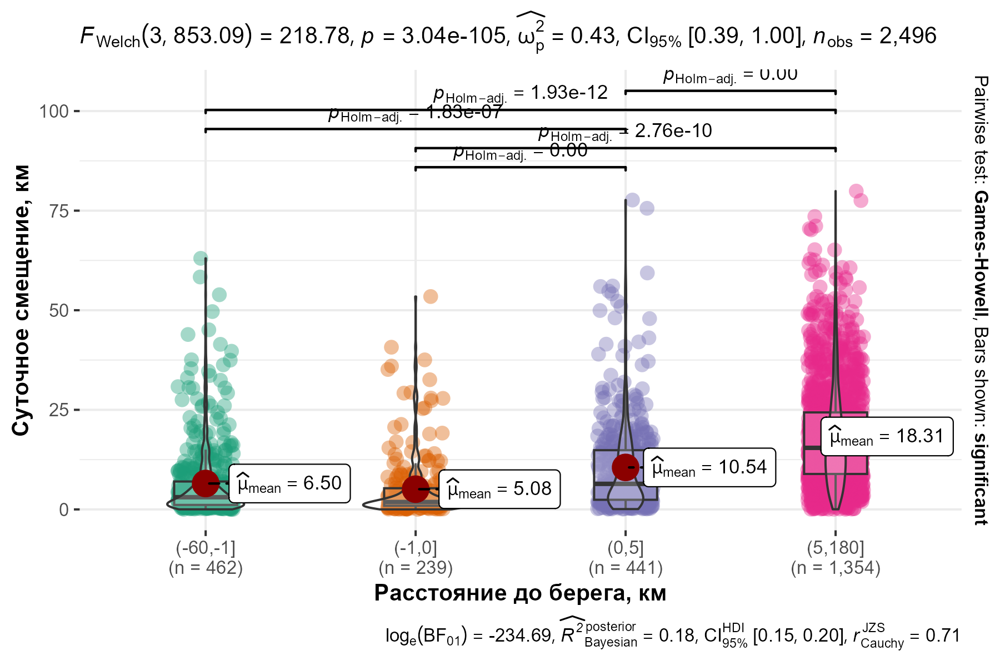</p> <p class="caption">Отсечки: 1 км вглубь суши, береговая линия, 5 км акватории</p> </div> .formula[ Pearson's `\(\rho(log(\text{daily}), log(|\text{dist2land}|))=0.43\)`, `\(p<0.001\)`. ] .footer[ Categories: inland, coastal area within 1 km, nearshore waters within 5 km, offshore waters ] ] ] ??? The differences in daily displacement are statistically significant between categories of distance from the coastline: inland, coastal area .gray[within 1 km], nearshore waters .gray[within 5 km], offshore waters. Polar bears exhibit an energy-saving behavioral strategy in coastal areas and do not frequently use inland areas for relocation. Mobility increases in offshore waters. Pearson's correlation between the logarithm of polar bear daily displacement and the logarithm of the absolute value of the distance to the coastline is also statistically significant. --- name: H83b3d .toc.sidebar.left-column[ .outline[ # [<span class="bilingvo" data-hover="Чипирование"><span class="show">Биотелеметрия</span></span>](#intro) # [Данные](#data) # [Результаты](#results).fg[] ## [Суточный ход ](#H8687d).fg[] ### [До берега](#Hed941).bg[] ### [Глубины и высоты ](#H83b3d).fg[].bg[] ## [.pass[Морской лёд] ](#H673fe) # [.pass[Обсуждение] ](#He8f34) # [Выводы ](#He0ed6) ] ] .toc.mainbar.right-column.scrollable[ .header.h3.broad[ <span class="generation">Глубины и высоты</span> .parent[.grand[Суточный ход .grand[Результаты]]] ] .fixprecode[ <div class="figure" style="text-align: left"> <p>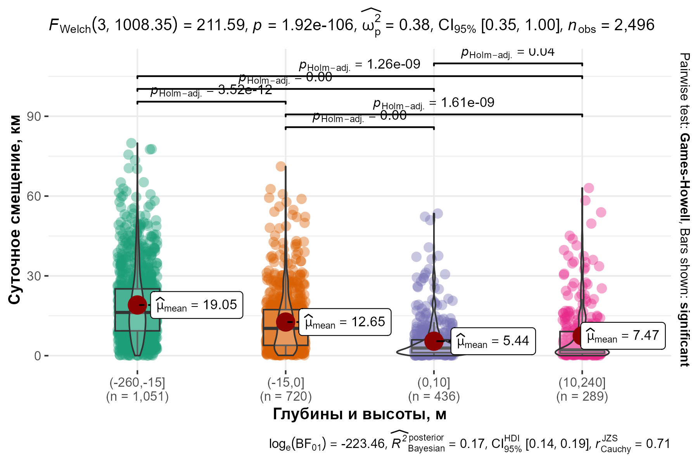</p> <p class="caption">Отсечки: глубина 15 м, уровень моря, высота 10 м</p> </div> .footer[ Categories: deep waters below 15 m, shallow waters, lowlands, highlands over 10 m ] .formula[ Pearson's `\(\rho(log(\text{daily}), \text{gebco})=-0.34\)`, `\(p<0.001\)`. ] ] ] ??? The differences in daily displacement are statistically significant between categories of aquatic and terrestrial topography: deep waters .gray[below 15 m], shallow waters, lowlands and highlands .gray[over 10 m]. Mobility in deep waters is higher. .gray[ Incidentally, no presence beyond the three hundred meters isobath was detected. ] Pearson’s correlation between the logarithm of polar bear daily displacement and depth/altitude is also statistically significant. --- name: H673fe .toc.sidebar.left-column[ .outline[ # [<span class="bilingvo" data-hover="Чипирование"><span class="show">Биотелеметрия</span></span>](#intro) # [Данные](#data) # [Результаты](#results).fg[] ## [Суточный ход ](#H8687d) ## [.pass[Морской лёд] ](#H673fe).fg[] ### [Ландшафты ](#H673fe).fg[].bg[] ### [Ландш.градиент](#Haf2c3).bg[] # [.pass[Обсуждение] ](#He8f34) # [Выводы ](#He0ed6) ] ] .toc.mainbar.right-column.scrollable[ .header.h3.broad[ <span class="generation">Ландшафты</span> .parent[.grand[.pass[Морской лёд] .grand[Результаты]]] ] .fixprecode[ .footer[ Habitat use for land, open water, marginal ice zone and pack ice ] <div class="figure" style="text-align: left"> <p>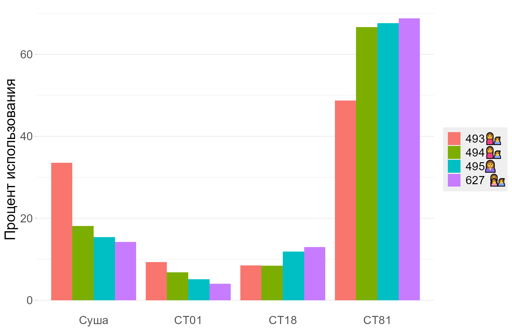</p> <p class="caption">Предпочитаемые категории открытой воды CT01, разреженного льда CT18, сплочённого льда CT81 и суши для <span class="dontprint"> <span class="inset map250495">495🙎</span> <span class="inset map630627">627👩👧👦</span> <span class="inset map250493">493👩👦</span> <span class="inset map250494">494👩👦</span> </span></p> </div> ] ] ??? Another metric, extracted from biotelemetry analysis, is the use of habitat categories: land, open water, marginal ice zone and consolidated ice. For more than a year, female polar bears preferred consolidated sea ice with concentration greater than 8/10. The second most popular habitat was land. One individual compensated for it presence on consolidated ice by spending time on land. All individuals in this sample also used small ice floes with ice concentration less than 1/10 and the marginal ice zone with ice concentration between 1/10 and 8/10. ¿¿¿ --- name: Haf2c3 .toc.sidebar.left-column[ .outline[ # [<span class="bilingvo" data-hover="Чипирование"><span class="show">Биотелеметрия</span></span>](#intro) # [Данные](#data) # [Результаты](#results).fg[] ## [Суточный ход ](#H8687d) ## [.pass[Морской лёд] ](#H673fe).fg[] ### [Ландшафты ](#H673fe).bg[] ### [Ландш.градиент](#Haf2c3).fg[].bg[] # [.pass[Обсуждение] ](#He8f34) # [Выводы ](#He0ed6) ] ] .toc.mainbar.right-column.scrollable[ .header.h3.broad[ <span class='outline generation'>Ландшафтный градиент</span> .parent[.grand[.pass[Морской лёд] .grand[Результаты]]] ] .fixprecode[ <div class="figure" style="text-align: left"> <p>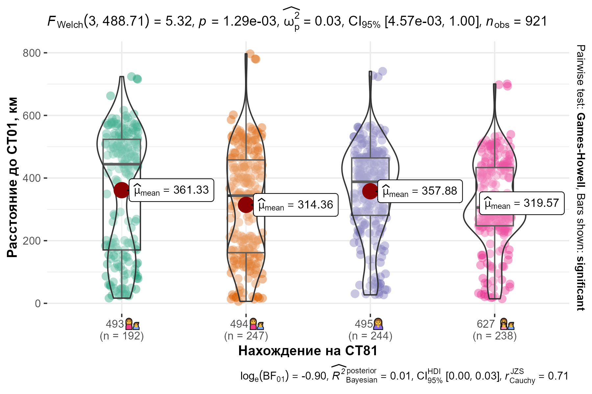</p> <p class="caption">Расстояние до кромки льда CT01 при нахождении на сплоченном льду CT81</p> </div> .footer[ Distance to the sea ice edge when located on the pack ice ] ] ] ??? We considered a polar bear to be remote from a certain habitat category when locations were recorded in the other categories. This example illustrates statistics for each individual located on the ice, based on the distance to the ice edge. When located on sea ice with a concentration of more than 8/10, polar bears usually avoid the sea ice edge, staying more then three hundred kilometers away from it. --- name: He8f34 .toc.sidebar.left-column[ .outline[ # [<span class="bilingvo" data-hover="Чипирование"><span class="show">Биотелеметрия</span></span>](#intro) # [Данные](#data) # [Результаты](#results) # [.pass[Обсуждение] ](#He8f34).fg[] ## [Ледовый сезон ](#He8f34).fg[].bg[] ## [Фенология ](#H1b039).bg[] ## [Моделирование](#maxent).bg[] # [Выводы ](#He0ed6) ] ] .toc.mainbar.right-column.scrollable[ .header.h2.broad[ <span class="generation">Ледовый сезон</span> .parent[.grand[.pass[Обсуждение]]] ] .fixprecode[ <div class="figure" style="text-align: left"> <p>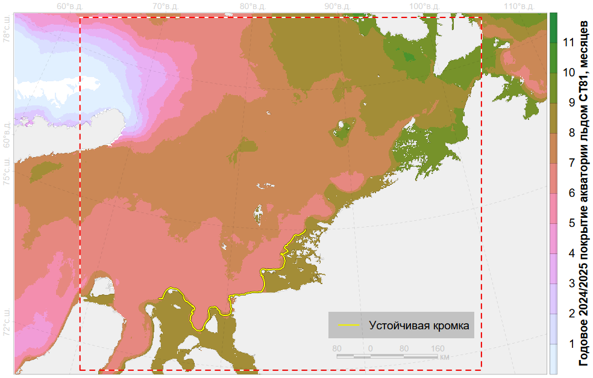</p> <p class="caption">Около 11 % .bbox[акватории] меньше полугода покрыто cплоченным льдом</p> </div> .footer[ Pack ice CT81 is absent for more than ½ a year in 11 % of aquatory. ] ] ] ??? This map illustrates how many months different locations in the Kara Sea are covered by ice during the annual period between the autumns of 2024 and 2025. The area of reliable fast ice, partly highlighted by a yellow line, is long-lived. The zonal area between Novaya Zemlya and Severnaya Zemlya stands out with pack ice that lasts a month longer. Polar bears there will be far from land after the ice melts. --- name: H1b039 .toc.sidebar.left-column[ .outline[ # [<span class="bilingvo" data-hover="Чипирование"><span class="show">Биотелеметрия</span></span>](#intro) # [Данные](#data) # [Результаты](#results) # [.pass[Обсуждение] ](#He8f34).fg[] ## [Ледовый сезон ](#He8f34).bg[] ## [Фенология ](#H1b039).fg[].bg[] ## [Моделирование](#maxent).bg[] # [Выводы ](#He0ed6) ] ] .toc.mainbar.right-column.scrollable[ .header.h2.broad[ <span class="generation">Фенология</span> .parent[.grand[.pass[Обсуждение]]] ] .fixprecode[ <div class="figure" style="text-align: left"> <p>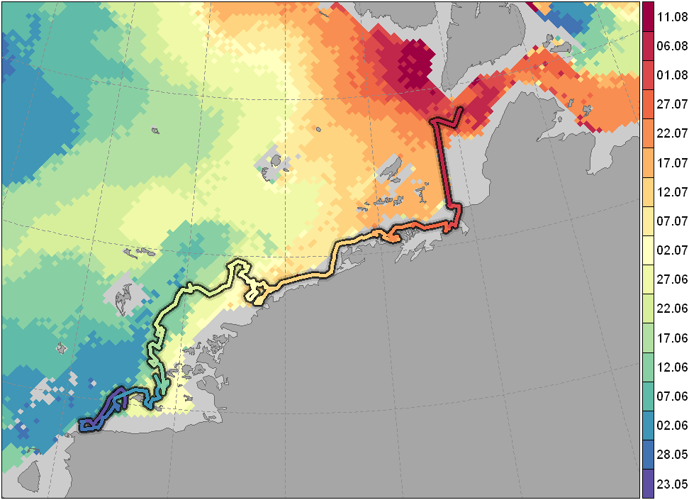</p> <p class="caption">Перемещение самки белого медведя в 2012 г., наложенное на фенологическую карту вскрытия ледового покрова <a name=cite-Rozhnov2017_hutuda_ru></a>(<a href='#bib'>Рожнов и др., 2017</a>). Цветовая легенда единая для участков траектории и для фенокарты.</p> </div> .pulling[ .pull-left-70[ ] .pull-right-30[ ] ] .footer[ Eastern-ward direction of sea ice disappearance and polar bear female movement in 2012 ] ] ] --- name: maxent .toc.sidebar.left-column[ .outline[ # [<span class="bilingvo" data-hover="Чипирование"><span class="show">Биотелеметрия</span></span>](#intro) # [Данные](#data) # [Результаты](#results) # [.pass[Обсуждение] ](#He8f34).fg[] ## [Ледовый сезон ](#He8f34).bg[] ## [Фенология ](#H1b039).bg[] ## [Моделирование](#maxent).fg[].bg[] # [Выводы ](#He0ed6) ] ] .toc.mainbar.right-column.scrollable[ .header.h2.broad[ <span class="generation">Моделирование</span> .parent[.grand[.pass[Обсуждение]]] ] .fixprecode[ <div class="figure" style="text-align: left"> <p>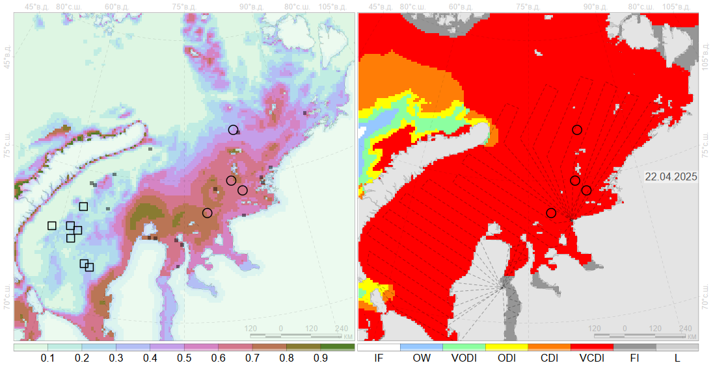</p> <p class="caption">Построение региональных моделей пригодности местообитаний белого медведя c использованием данных биотелеметрии</p> </div> Ковариаты на основе норвежских ледовых карт <span class="cite hovertext" data-hover="Ice Service charts"><a name=cite-cryometno></a>([Norwegian Ice Service, 2023](#bib))</span>. .footer[ Modeling of habitat suitability, based on the bioletemetry data, will be used for more precise population size estimation after aerial survey in spring 2025 ] ] ] --- name: He0ed6 .toc.sidebar.left-column[ .outline[ # [<span class="bilingvo" data-hover="Чипирование"><span class="show">Биотелеметрия</span></span>](#intro).bg[] # [Данные](#data).bg[] # [Результаты](#results).bg[] # [.pass[Обсуждение] ](#He8f34).bg[] # [Выводы ](#He0ed6).fg[].bg[] ] ] .toc.mainbar.right-column.scrollable[ .header.h1.broad[ <span class="generation">Выводы</span> ] .fixprecode[ + Суточное смещение меньше в безлёдный период. + Наименьшее суточное смещение в километровой полосе береговой линии. Суточное смещение увеличивается при удалении 5 км и больше от берега + Наименьшее суточное смещение в береговой зоне с высотами до 10 м. На высотах до 250 м суточное смещение увеличивается. На глубинах более 15 метров значение суточного смещения высокое. + За период более 11 месяцев суточное смещение одиночной самки выше суточного смещения самок с детенышами. Достоверность такого отличия может быть принята по уровню 0.05. + Не отмечается приверженности кромки льда + Не отмечается заходов белых медведей на лёд глубоководного бассейна + Продолжительность ледового сезона создает благоприятные условия для благополучия беломедвежьей субпопуляции Карского моря .footer[ **Conclusions** are the summary of statements from the early slides ] ] ] --- name: bib class: notable .notfootnote.small.scrollable.bibliography[ .fixprecode[ <div class="backtoshow"><a href="javascript:window.history.back();">↩</a></div> <a name=bib-Argos-filter></a><a href="javascript:window.history.back();">Freitas, C., C. Lydersen, M. A. Fedak, and K. M. Kovacs</a> (2008). "A simple new algorithm to filter marine mammal Argos locations". In: _Marine Mammal Science_ 24.3, pp. 315-325. DOI: [10.1111/j.1748-7692.2007.00180.x](https://doi.org/10.1111%2Fj.1748-7692.2007.00180.x). <a name=bib-GEBCO_2025></a><a href="javascript:window.history.back();">GEBCO Bathymetric Compilation Group</a> (2025). _The GEBCO_2025 Grid - a continuous terrain model for oceans and land at 15 arc-second intervals_. En. DOI: [10.5285/37C52E96-24EA-67CE-E063-7086ABC05F29](https://doi.org/10.5285%2F37C52E96-24EA-67CE-E063-7086ABC05F29). URL: [https://www.gebco.net/data-products-gridded-bathymetry-data/gebco2025-grid](https://www.gebco.net/data-products-gridded-bathymetry-data/gebco2025-grid) (visited on Oct. 06, 2025). <a name=bib-Jonsen2019></a><a href="javascript:window.history.back();">Jonsen, I. D., C. R. McMahon, T. A. Patterson, M. Auger-Méthé, R. G. Harcourt, M. A. Hindell, and S. Bestley</a> (2019). "Movement responses to environment: fast inference of variation among southern elephant seals with a mixed effects model". In: _Ecology_ 100, p. e02566. DOI: [10.1002/ecy.2566](https://doi.org/10.1002%2Fecy.2566). <a name=bib-Jonsen2020></a><a href="javascript:window.history.back();">Jonsen, I. D., T. A. Patterson, D. P. Costa, P. D. Doherty, B. J. Godley, W. J. Grecian, C. Guinet, X. Hoenner, S. S. Kienle, P. W. Robinson, S. C. Votier, S. Whiting, M. J. Witt, M. A. Hindell, R. G. Harcourt, and C. R. McMahon</a> (2020). "A continuous-time state-space model for rapid quality-control of Argos locations from animal-borne tags". In: _Movement Ecology_ 8, p. 31. DOI: [10.1186/s40462-020-00217-7](https://doi.org/10.1186%2Fs40462-020-00217-7). <a name=bib-cryometno></a><a href="javascript:window.history.back();">Norwegian Ice Service</a> (2023). _Ice Service charts_. URL: [https://cryo.met.no/en/latest-ice-charts](https://cryo.met.no/en/latest-ice-charts) (visited on May. 10, 2023). <a name=bib-OpenStreetMapData></a><a href="javascript:window.history.back();">Topf, J. and C. Hormann</a> (2025). _Data Derived from OpenStreetMap for Download_. Under the Open Database License "ODbL" by the OpenStreetMap Foundation. Large simplified polygons not split. Updated 2025-02-14T11:51. URL: [https://osmdata.openstreetmap.de/data/land-polygons.html](https://osmdata.openstreetmap.de/data/land-polygons.html) (visited on Feb. 14, 2025). <a name=bib-USNIC_MIZ></a><a href="javascript:window.history.back();">US NIC</a> (2022). _Daily Arctic Marginal Ice Zone (MIZ) and Overlay Shapefile_. URL: [https://usicecenter.gov/Products/ArcticData](https://usicecenter.gov/Products/ArcticData) (visited on Apr. 05, 2022). <a name=bib-Rozhnov2017_hutuda_ru></a><a href="javascript:window.history.back();">Рожнов, В., Н. Платонов, С. Найденко, И. Мордвинцев, and Е. Иванов</a> (2017). "Перемещение самки белого медведя в Карском море в период летнего таяния льда". In: _Доклады Академии наук_, pp. 359-363. DOI: [10.7868/S0869565217030276](https://doi.org/10.7868%2FS0869565217030276). <a name=bib-Sorokin2023></a><a href="javascript:window.history.back();">Сорокин, П., Е. Звычайная, Е. Иванов, И. Мизин, И. Мордвинцев, Н. Платонов, А. Исаченко, Р. Лазарева, and В. Рожнов</a> (2023). "Генетическая структура популяции белого медведя (_Ursus maritimus_) в морях российской Арктики". In: _Генетика_ 59.12, p. 1393–1406. DOI: [10.31857/S0016675823120123](https://doi.org/10.31857%2FS0016675823120123). ] ] --- name: beforefinalizing name: atlas .toc.sidebar.left-column[ .outline[ # [<span class="bilingvo" data-hover="Чипирование"><span class="show">Биотелеметрия</span></span>](#intro) # [Данные](#data) # [Результаты](#results) # [.pass[Обсуждение] ](#He8f34) # [Выводы ](#He0ed6) ] ] .toc.mainbar.right-column.scrollable[ <audio data-autoplay src="https://detskie-pesni.com/mp3/437.mp3"></audio> .pulling[ .pull-left-65[ ### Благодарности + **ПАО «НК «Роснефть»** + **ООО «РН-Ванкор»** + Экипажи вертолётов UTair + Компания «Эс-Пас» + Заповедник «Большой Арктический» + Администрация п.г.т. Дикcон ] .pull-right-35[ .alltogether[ <p>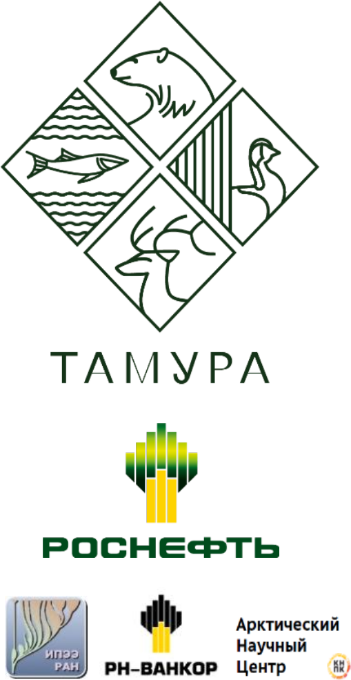</p> ] ] ] .footer[ Разрешения Росприроднадзора на добывание объектов животного мира, занесенных в Красную книгу РФ: № 013 от 06.03.2024 и № 002 от 04.03.2024, № Р027-00113-77/01894740 от 20.02.2025 и № Р074-00113-77/01894667 от 20.02.2025. Этические стандарты в соответствии с протоколами № 37 от 25 мая 2020 г. и № 37а от 19 марта 2024 г. Комитета по этике ИПЭЭ РАН. Обеспечение данных в п.г.т. Диксон: Анна Быкова, Борис Соловьёв, Дарья Кузнецова, Полина Ильина, Иван Котлов, Хосе Антонио Фернандес-Бланко. Утилита для получения данных Argos: Дмитрий Сальман. Фотографии по проекту «Тамура»: Денис Зыбин *Acknowledgements* ] ]